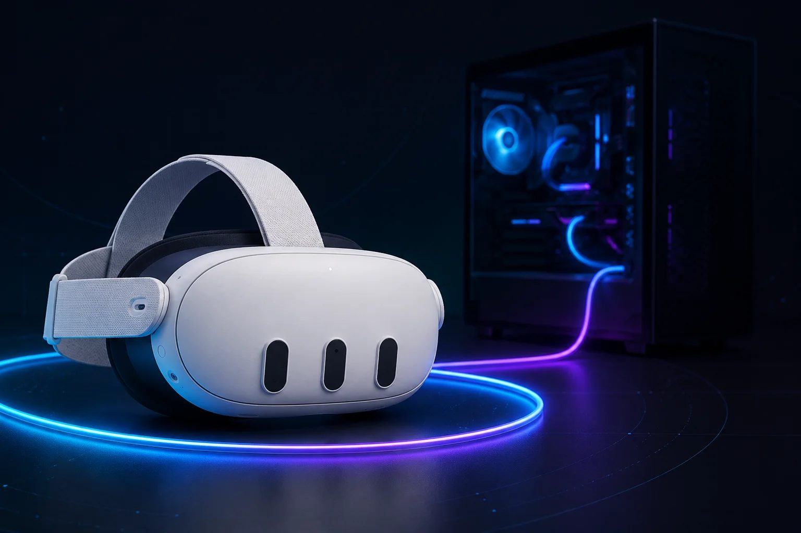

How to connect your Quest 3 to a PC (Link & Air Link)

Connecting your Quest 3 to a gaming PC is what unlocks the deep end of VR — the full SteamVR library, sharper visuals, and games a standalone headset can't run. The good news: you don't have to buy anything to start. Meta's connection software is free, and you already have a headset and (presumably) a PC. The whole thing comes down to one choice — cable or wireless — and installing one app. If you're not sure your PC is powerful enough to drive VR, start with our PCVR guide, which covers the hardware side.
Start with the software. Both official methods need the same PC app: Meta Horizon Link — the program formerly known as Meta Quest Link, and before that the Oculus app. Download it on your PC, install it, and sign in with the same Meta account you use on your headset. Leave it running. That's the piece that does the talking between the two devices, and looking for the old name is how people end up downloading the wrong thing.
The wired way, Link, is the most reliable connection and the one to start with. You need a USB-C cable that supports USB 3 speeds — at least 5 Gbps — plugged into a USB 3.0 port on your PC (usually the blue ones, or marked "SS"). Meta sells an official Link cable, but a good third-party USB 3 cable works just as well and costs far less; a three-metre length is the easy sweet spot for room to move. Plug it in, then in the headset press the Meta button, open Quick Settings, choose Link, select your PC, and hit Launch. The PC app has a built-in cable speed test — run it; if it says the connection is compatible, you're set, and if it fails, the cable or the port is your culprit. Wired gives you the lowest latency and the steadiest image, which matters for fast or competitive games. The only downside is the obvious one: you're on a leash.
The wireless way, Air Link, is free and built into Horizon Link, and it lets you play untethered. Enable it in the PC app, then in the headset open Quick Settings and Link, toggle Use Air Link, pick your PC from the list, and pair the two by confirming the matching code. The catch is that wireless lives and dies on your network. You want a 5 GHz or Wi-Fi 6 router, your PC connected to that router by an Ethernet cable rather than its own Wi-Fi, and the router in or near the room where you play. Get that right and Air Link is genuinely good; skimp on it and you'll get stutter and blur. Our wireless guide walks through Air Link, Steam Link and the network setup step by step.
There's also the wireless route a lot of people quietly prefer. Meta's own app can be fussy — especially about launching Steam games — so two alternatives are popular. Virtual Desktop is a paid app (around $20) from the Meta store that many users find smoother and better-looking than Air Link, partly thanks to the Quest 3's newer video codec; you install it on the headset, install the free Virtual Desktop Streamer on your PC, sign in with the same username, and connect. Steam Link is Valve's free app that streams SteamVR straight to the headset with nothing extra to buy. If your library is mostly on Steam, either of these is often the path of least resistance.
To actually play Steam games, install Steam and SteamVR on your PC; once you're connected by any of the methods above, launch SteamVR and your games appear. Steam Link and Virtual Desktop drop you into SteamVR directly.
If something won't connect, it's almost always one of three things: the wrong USB port or a weak cable (use a USB 3.0 port and run the speed test), a soft Wi-Fi setup (get the PC onto Ethernet), or out-of-date software (update your graphics drivers and your headset).
My advice for a first setup: go wired, with a solid USB 3 cable. It's the least temperamental, you'll know immediately whether your PC keeps up, and you can always add wireless freedom later. Once VR has its hooks in you, that's when a router upgrade and Virtual Desktop start to make sense. Still deciding whether the Quest 3 is your headset at all? Our Quest 3 vs Quest 3S guide and the quiz will help.
Recommended gear
Answer 7 quick questions and get a personalized match in 60 seconds.
Take the VR Finder quiz →This guide contains affiliate links. If you buy through them we may earn a commission at no extra cost to you, which helps keep vr.ar free. As an Amazon Associate, vr.ar earns from qualifying purchases. Prices and specifications are subject to change. See our Privacy Policy.